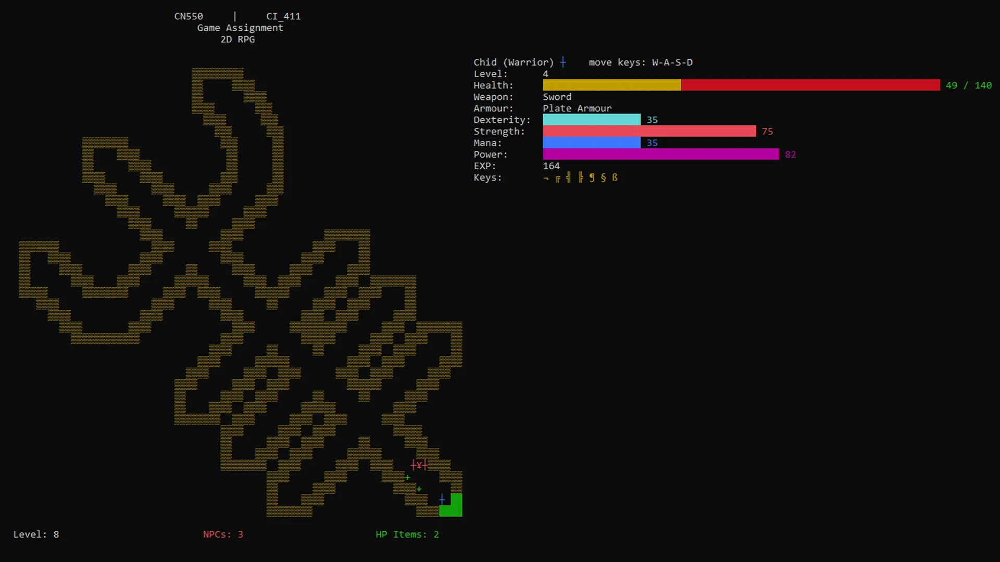
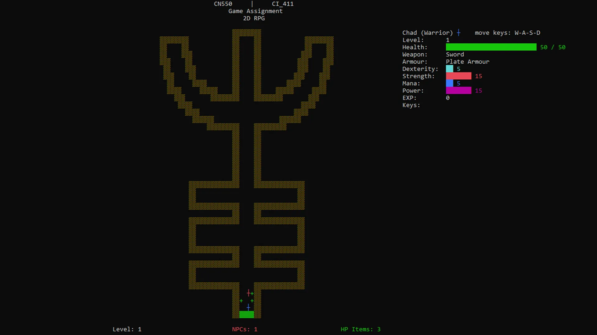
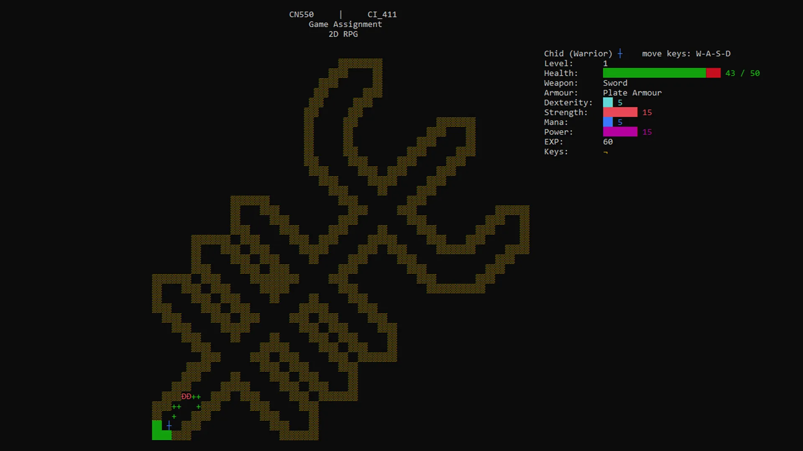
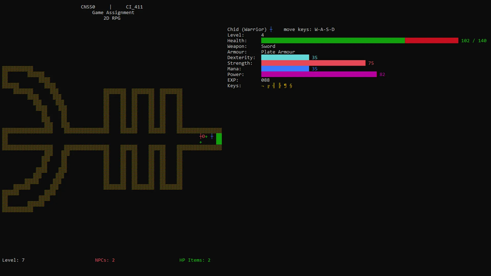
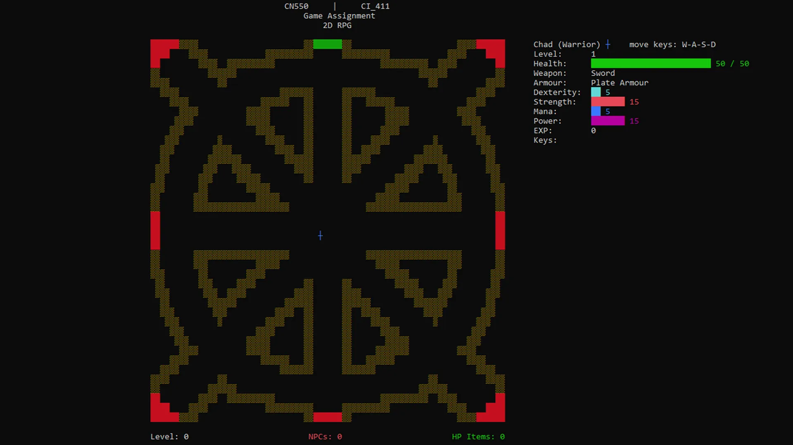
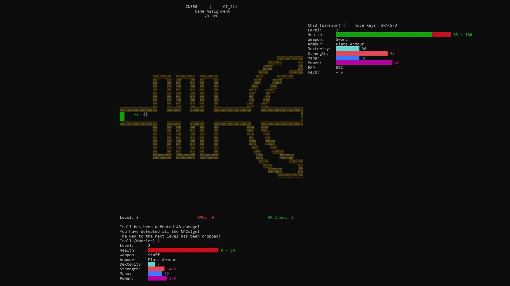
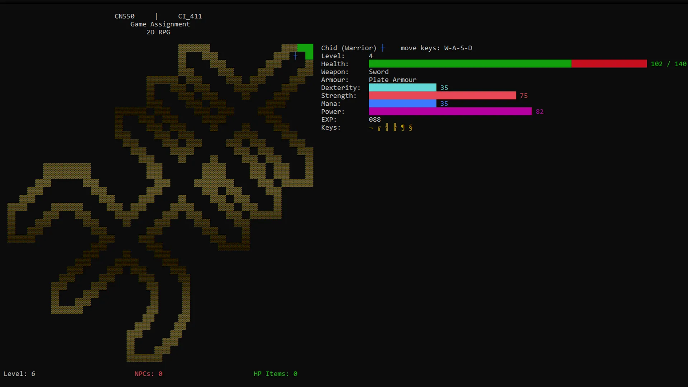
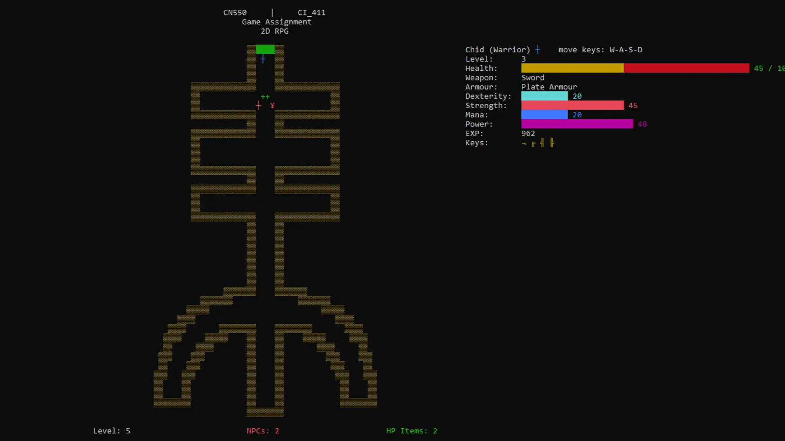
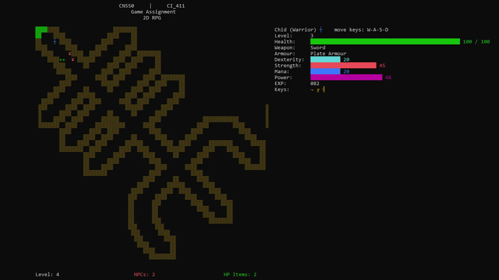

Project Overview
One assignment for my first semester at University of Brighton was to create a game in Visual
Studio with C++.
I developed a dynamic two-player C++ console game using Visual Studio with the C++ Console App
template. The game combines strategic progression, radial level design, and an engaging combat
system. Players traverse a board to defeat enemies, collect keys, and unlock levels in a
clockwise sequence following the structure of the Helm of Awe. The final goal is to clear all
levels by vanquishing all NPCs.
Gameplay and Mechanics
- Player Control and Movement: Players move across the game board using input
keys. The
conio.h library provided getch() functionality for
responsive input without requiring the Enter key.
- Health and Levelling System: Players collect health packs and defeat
enemies to gain experience points (XP). Levelling up increases all stats, including
strength, dexterity, and mana, enhancing combat effectiveness.
- Combat and Blood Lock Mechanic: Each enemy must be defeated to progress,
with the final NPC dropping a key to unlock the next level. Combat power is calculated based
on player class attributes:
- Strength, Dexterity, and Mana determine attack power.
- Attacking occurs when a player collides with an enemy.
- Experience gained is proportional to damage inflicted.
- Revival Mechanic: In two-player mode, a downed player can be revived by the
other. If both players fall, the game ends with a replay or quit option.
Level Design
The radial layout reflects the Helm of Awe symbol.
- Levels unlock sequentially in a clockwise pattern.
- Each prong represents a combat challenge with randomised enemies.









Development and Code Structure
- Object-Oriented Design: The project leverages C++ classes for modular,
maintainable code:
- Game class manages game flow, player turns, and level transitions.
- GameObject class serves as a base for player and NPC objects,
encapsulating properties like health, position, and stats.
- Level class handles level-specific design and NPC generation.
- ConsoleHandle (custom header) utilizes Windows functions for
enhanced console control:
SetConsoleTextAttribute() changes text colour for dynamic
feedback.SetConsoleDisplayMode() switches to full-screen mode for
immersive play.
- Control Structures: Loops and conditionals handle core logic:
- For loops iterate through levels and NPCs.
- While loops manage game state until win/loss conditions are met.
- If statements determine combat outcomes and XP rewards.
Key Programming Techniques
- Modular Header Files: Each header file defines distinct components,
enhancing reusability and clarity:
- Main.cpp coordinates the game loop and player input.
- Game.h and Game.cpp manage overall game logic.
- GameObject.h encapsulates character and enemy behaviour.
- Level.h designs dynamic board states.
- ConsoleHandle.h streamlines Windows-specific functionality.
- Colour Feedback and Full-Screen Control: Using Windows API functions added
visual feedback for health, damage, and key collection events.
Conclusion
This project demonstrated my ability to design a fully functional C++ game using fundamental
programming concepts, object-oriented principles, and Windows API features. By balancing combat,
strategic levelling, and engaging mechanics within a radial level design, I delivered an
immersive and technically robust console-based gaming experience. Given more time, I would
expand the interactions with more objects, such as opening chests to unlock new items, such as
permanent stat increases, armour and weapons. I would have introduced more vectors, in use for
the NPCs to have unique and enemies with saved states.